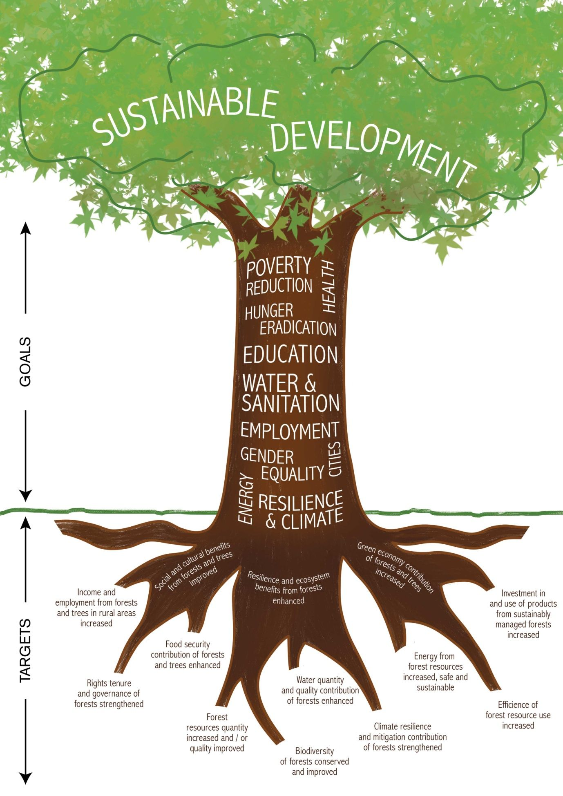

RADICAL FUTURE TRANSFORMATION is set to drive economic growth growth for the upcoming future that will uphold 21century this will upheaval building the widespread availability of digital technologies that will upskill the YOUTH
The propose of this is to embedd society that is already in sink of infrastructure and new ideas of living taking it to considaration that technologies changes our daily lives every second.
The Fourth Industrial Revolution is a way of describing the blurring of boundaries between the physical, digital, and biological worlds. It’s a fusion of advances in artificial intelligence (AI), robotics, the Internet of Things (IoT), 3D printing, genetic engineering, quantum computing, and other technologies. It’s the collective force behind many products and services that are fast becoming indispensable to modern life. Think GPS systems that suggest the fastest route to a destination, voice-activated virtual assistants such as Apple’s Siri, personalized Netflix recommendations, and Facebook’s ability to recognize your face and tag you in a friend’s photo.  As a result of this perfect storm of technologies, the Fourth Industrial Revolution is paving the way for transformative changes in the way we live and radically disrupting almost every business sector. It’s all happening at an uprecedented, whirlwind pace.